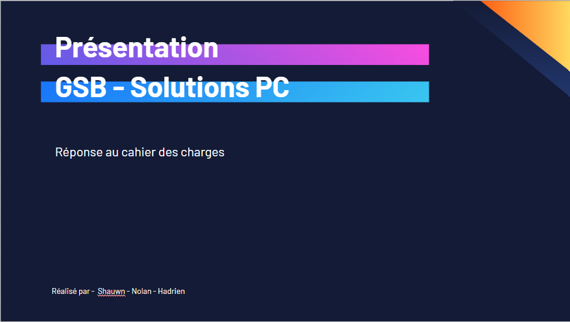
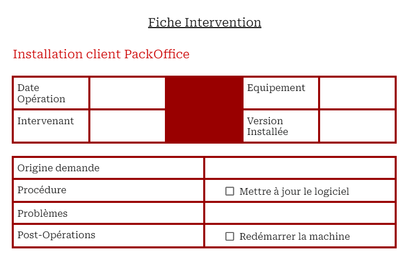
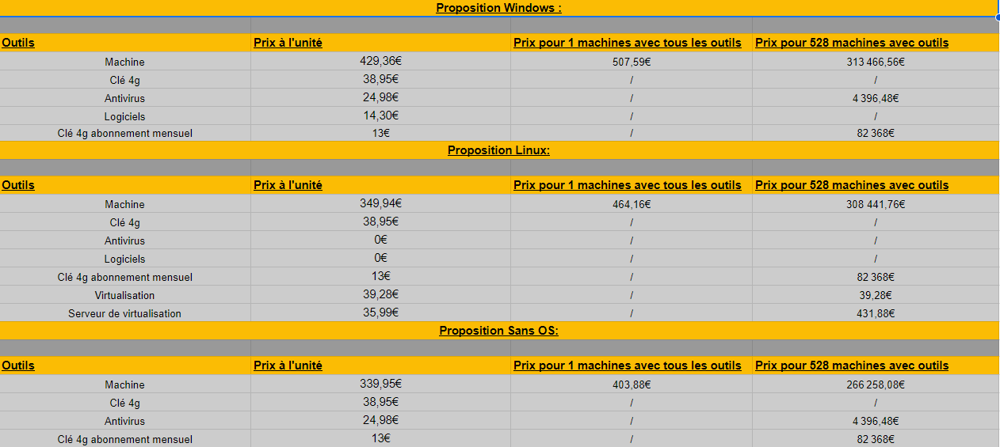

Voici les projets réalisées durant mon parcours scolaire
Projet GSB Réseau
Contexte
L'entreprise GSB (Galaxy-Swiss-Bourdin) est une entreprise pharmaceutique. Pour promouvoir leurs
produits, elle emploie des visiteurs médicaux allant rendre visite au médecin pour présenter les
produits aux professionnels.
L'entreprise souhaite fournir aux visiteurs médicaux des
appareils portables qui les aideraient à convaincre les médecins visités.
Ainsi, elle fait
appel à des particuliers pour chercher et présentr trois solutions techniques de pc portable.
Il faut aussi présenter les solutions logicielles et les éléments de configuration et de
paramétrage des solutions proposées
Environnement
-
 "Travail en équipe de 3 personnes"
"Travail en équipe de 3 personnes" - "Période : Du 21/09/2023 au 12/12/2023"
Compétences
- "Participation à un projet"
- "Préparer une présentation orale"
- "Réaliser une procédure, un contrat"
- "Travail en équipe"
Réalisations
-
- Powerpoint présentant les descriptifs techniques des solutions proposées
 -
- Fiches techniques des solutions logicielles proposées
 -
- Tableau des prix des trois propositions

Projet GSB Frais
ghukzhfhlhih
Projet 2
ghukzhfhlhih
Projet 3
ghukzhfhlhih
Projet 4
ghukzhfhlhih